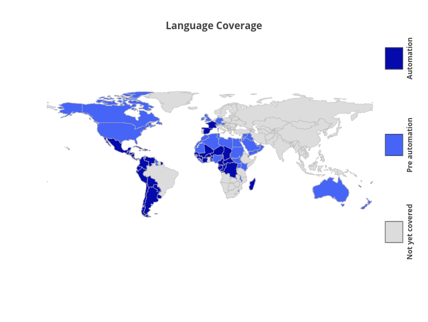

Chris Davie Data engineer.
I’m a data engineer at Speechmatics, which transcribes speech to text using state of the art machine learning technologies. I’m automating this for many languages – my prototype has successfully produced Spanish, Italian and Portuguese, has produced reasonable models for French, Polish and Russian. We’re working on Korean and Swedish and we’re building regional variations – Latin American Spanish, and Brazilian Portuguese. My portfolio describes the projects I've worked on in more detail.
I designed half of the pipeline, automating a very manual process, and my design and framework is being incorporated for the other half of the pipeline. I also designed and help build the database, managing Tbs of data, and maintain the web scrapers gathering data for the new languages..
Driven by a colleague and myself, our team has recently included unitests as part of our methodology, we plan to shift to continuous testing, moving to continuous integration. We are deciding on the pipeline framework to use for the final software, and we are down to two open source options – Luigi or Bazel.
The automation pipeline is in Python, the database built using PostgreSQL and the scrapers use scrapy. I also have extensive experience of numerical Python development, including numpy, scipy, matplotlib and cython, developing novel algorithms to solve fantasy sports, mapping and fluid dynamics problems. I also have some experience building algorithms in C++.
The link below describes the pipelining project in more detail.
I'm currently working through the AI and machine learning problems on hackerrank, improving my understanding of data science and run my development environment in docker.
I graduated two years ago from my computational Physics PhD, looking at the robustness of a laser fusion, a potential source of green electricity. I published two first author papers, gave numerous presentations, including two at international conferences.